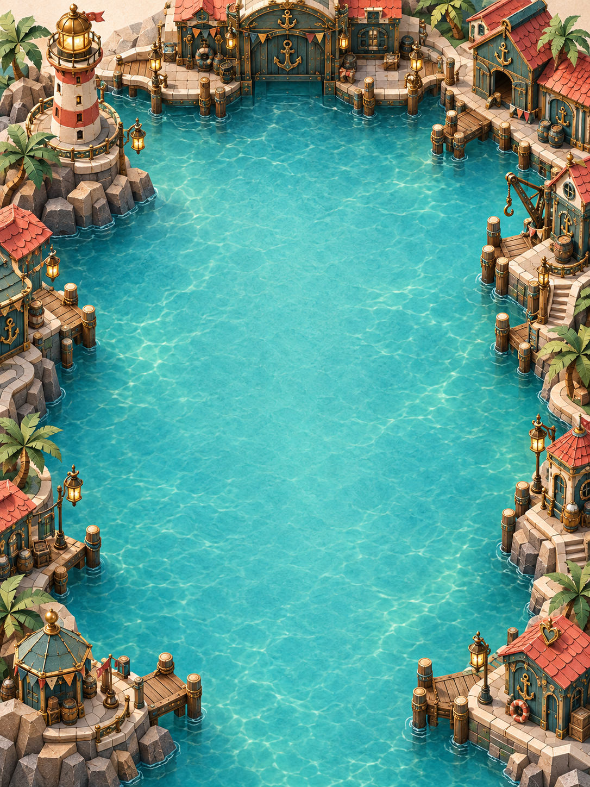

Pennies on the tide0 / 3 treasures

A POSTCARD FROM MARINA
Treasures on the tide.
Tiny captain wanted.
You skipper my Little Sailboat — the prize from my stall.
Pennies, a postcard and a bottle have drifted into the basin.
Hold in the water behind the boat to push it away. That spray is my water jet.
THE HARBOUR POST
Treasures delivered.
Everything is safely moored.
A pocket-harbour voyage through Marina’s world.